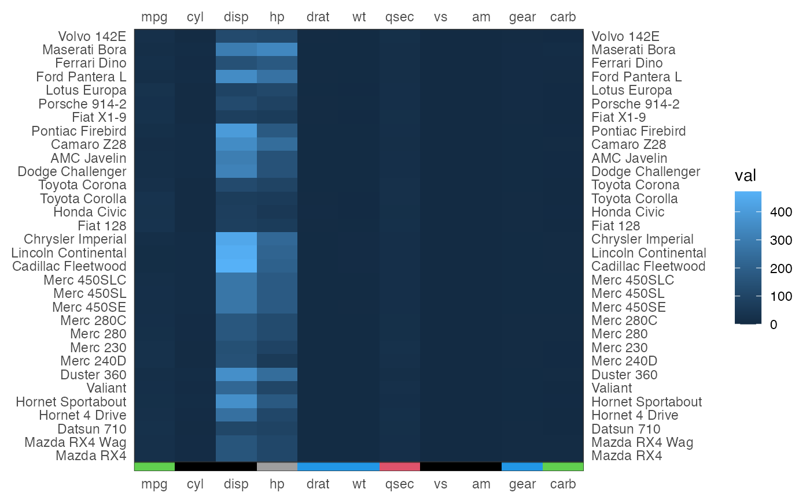

Add an axis annotation to a ggplot matrix
tgplot_add_axis_annotation(
heatmap,
annotation,
position = "bottom",
size = 0.02,
label = NULL,
plot_left = TRUE,
plot_right = TRUE,
label_color = "black"
)a ggplot matrix object - output of tgplot_heatmap
can be either a vector of colors or a ggplot object
position of the axis annotation ("top", "bottom", "left" or "right")
width of the annotation
annotation label (optional)
plot a label to the left of the annotation
plot a label to the right of the annotation
color of the annotation label
a gtable object. Can be plotted using cowplot::ggdraw.
tgplot_heatmap(as.matrix(mtcars)) %>%
tgplot_add_axis_annotation(as.matrix(mtcars)[5, ] + 1) %>%
cowplot::ggdraw()
